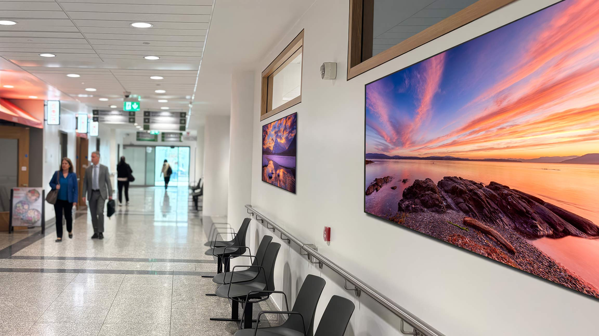

Humanising healthcare through nature and innovation
ORB Health brings nature into healthcare spaces through digital art screens designed to support calm, wellbeing, and healing. We combine biophilic design research with premium imagery to create healing environments that make a measurable difference.
Backed by Biophilic Design
- Research shows that exposure to nature can significantly reduce stress and improve patient experience in healthcare environments. Biophilic design brings these benefits indoors, even where natural light or planting isn’t possible.
- Designed to calm Nature imagery helps lower stress and anxiety, creating a more reassuring environment for patients and visitors.
- Supports healing Positive visual distraction can aid recovery by promoting relaxation and emotional comfort.
- Improves transitional spaces Corridors and walkways become moments of calm rather than overlooked, clinical spaces.
- Nature without limits Delivers the benefits of nature in areas where windows, daylight, or real planting aren’t feasible.
- Supports staff wellbeing Can help to reduce mental fatigue and cognitive load in demanding healthcare settings.
- Flexible content Choose from seasonal, local, or bespoke natural scenes to suit your space and context.

ORB Health is working in collaboration with the Mater Hospital to explore the role of digital nature in clinical spaces. Our work focuses on calm, measurable interventions aligned to clinical workflows, supporting wellbeing for patients, visitors, and staff.